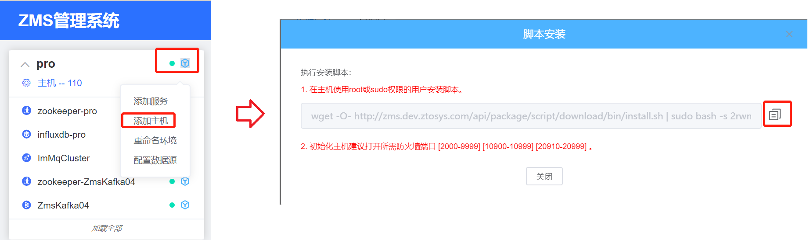
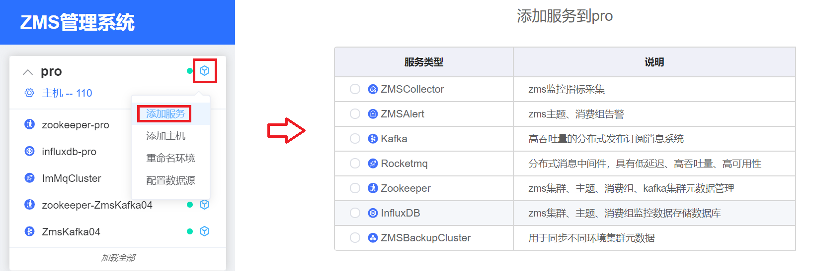
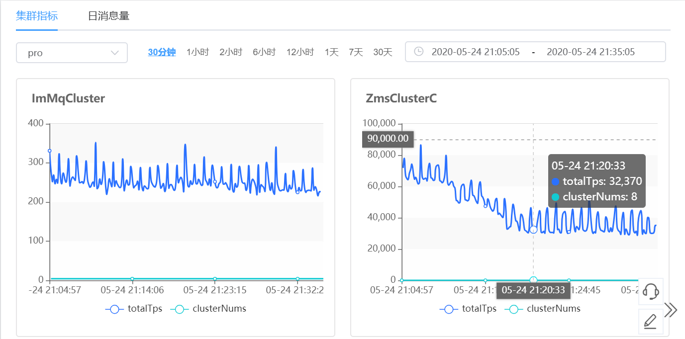

中通消息服务运维平台实践（已开源）
中通快递每天有数千万的运单在各个环节运转，每个环节都有对应的多套业务系统来支撑，业务系统之间上下游关系较为密切，从上游的客户订单到下游转运、结算、分析等每个环节都离不开消息中间件，它主要解决了系统之前的耦合、业务的削峰填谷、异步通信、数据同步和冗余存储等等功能需求，是现有系统架构中，不同系统之间交互的主要方式之一。
在2015年中通开始大量采用消息中间解决一些特定的问题，随着业务的增长，各环节有了更精细化的产品，我们消息中间件的数据体量越来越大，集群规模越来越多，中间件也越来越多样化，统一管理这些消息中间件变得尤为重要，因此我们研发了中通消息中间件平台ZMS，主要基于RocketMQ+Kafka两套业界比较主流消息中间件，提供了自动化部署、主题/消费者的申请审核、统一的SDK、管理控制台、监控告警到无感知扩容迁移等一系列运维的功能，目前ZMS管理了17个集群，包括7个Kafka集群和10个RocketMQ集群，主题1000多个，消费组3000多个，日均消息流转达到百亿级。
ZMS从最初的版本演进到现在，基本围绕我们的最初设计的功能，根据每个阶段的痛点不同，解决不同的问题。整个过程，根据不同阶段的不同输出，大体可以三个维度。
经公司内部评估，ZMS 已经成长为一套相对成熟的消息中间件云平台化解决方案，可以正式对外开放，与社会上的同行共同打磨，故决定于2020年5月26号正式开源，将代码推送到github 仓库，开源地址信息如下：
官方开源地址：https://gitee.com/zto_express/zms
1、自动化运维与部署
自动化运维部署，主要是方便运维人员可以快速通过ZMS平台向导式初始化一个集群，其架构设计如下图所示。
zms-portal：zms 管理后台，可同时管理多个环境的资源，包括：添加主机、服务，消息集群状态监控、配置消息集群告警规则，消息集群资源管理等。
备注：所谓的环境我们可以简单看出开发环境、测试环境、高保真环境、生产环境。
在每台机器上首先需要安装 zms-agent (代理服务)、supervisor 等基础组件，为了方便运维，ZMS 提供了一键初始化主机的脚本，其操作流程如下：

运维人员只需要去指定的机器上复制上述命令即可。这样实现的目的是 zms-portal 无需管理宿主机器的用户名、密码等敏感信息，做到安全可控。zms 能自动感知安装了 zms-agent 的机器并将其纳入 zms-portal 的管理运维体系。
在 ZMS 中我们统一将 Kafka、RocketMQ、ZK、指标收集、监控告警等统一看成是一个服务，在不同的环境中可以选择性的安装，其操作如下图所示：

2、统一的客户端 SDK
基于中通业务的特点在具体项目中采用了Kafka与RocketMQ 两种不同的消息中间件，如果业务方在自己项目中既要使用 Kafka 的消息中间件，又要使用 RocketMQ 的消息中间件，对于消息中间件的使用来说要求非常高，因为需要了解这些相似又不同的 API，分别了解其配置参数与其代表的含义，因此为业务方提供统一的API显得尤为重要与迫切。
zms-sdk 的主要设计理念：
- 屏蔽底层消息中间件类型，提供统一标准的API。
- 提供标准的埋点，方便打造完备的监控体系。
- 云平台化，开发人员只需关注TOPIC、消费组本身，无需关注 TOPIC 是存储在哪个集群上，即将 TOPIC、消费组资源化，用户只需按需向平台申请 topic、消费组即可。
zms-sdk 的整体架构设计如图所示：

主要的交互与设计要点如下：
- 运维人员通过 zms-portal 在线安装集群，集群的元数据将会存在 zookeeper 中。
- 开发人员通过在 zms-portal 申请 topic、消费组。
- 运维人员在 zms-portal 中对用户的申请进行审批，并根据用户的需求分配到适合的集群中，topic 所在集群等元信息会写入到 zookeeper中。
- 开发人员通过 zms-sdk 向所申请的 topic 发送消息，zms-sdk 内部会从 zk 获取 topic 对应的元信息并创建对应的客户端，最终完成消息的发送。
整个设计的核心是引入 zookeeper 作为元数据的存储仓库，并充分利用其事件监听机制，能完成很多“高大上”的功能，例如主题在线迁移功能。
试想一下在双十一等大促场景，如果一个集群负载很高从而达到瓶颈，一方面是可以对集群进行扩容，另外一种可行的方法时将该集群中的 topic 迁移到其他空间集群，正是依托于 zookeeper 的事件机制，应用客户端无需重启就可以自动感知 topic 的配置发生了变化，从而重新构建到新集群的客户端对象，完成消息发送的不停机在线迁移。
3、监控数据采集服务
对消息中间件进行监控并进行可视化展示是运维最基本的需求，RocketMQ、Kafka 消息中间件本身提供了监控数据的采集并存储在各自的服务端内存，并且是非持久化的，在内存中只存储当前时间段的调用信息，并随着时间的推进，旧的数据将被删除。当然 RocketMQ、Kafka 都提供了相应的API方便客户端采集存储在服务端内存中的监控数据。
ZMSCollector 的职责就是定时向 RocketMQ、Kafka 集群采集相关的调用信息并持久化到 influxdb中，为后续的可视化展示提供必要的基础，ZMSCollector 已经被服务化，可以通过 zms-portal 在线安装。
ZMSCollector 的整体架构设计如下图所示：
ZMSCollector 的整体设计比较简单，一方面通过定时调度的方式调用底层消息中间件提供的API，将监控指标存储到 influxDb，另外一方面采集 zms-sdk 采集的监控数据，zms-sdk采集的监控数据会发送的一个固定的 topic ，ZMSCollector 订阅指定的 topic，对消息进行加工后存储在 influxDb中。
4、多机房解决方案
目前中通在异地容灾方面还刚刚起步，目前只需要实现同城机房冷备，即一个机房的入口网络发生故障，需要将流量切换到另外一个备份机房。ZMS 消息中间件运维平台天然支持多机房的部署架构，因为在 ZMS 的“眼中”，一个不同的机房就相当于一个环境，可以直接在 zms-portal 中完成一个新机房的安装部署服务。但由于发生故障后，两个机房内部的网络有可能会断开，故两个机房中的元数据应该分开存储，即 zms-sdk 所依懒的 zookeeper 集群不同，故需要完成 zookeeper 元数据的同步，该工作由 ZMSBackupCluster 服务来承担，其架构设计如下图所示：
其基本的设计思路是 ZMSBackupCluster 订阅待同步机房的 zookeeper，一旦元数据有发生变化，会按照配置集群元数据映射关系将其同步到目标机房的 zookeeper中，这样部署在备份机房中的应用可以无感知的接管主机房中所有的消息发送与消息消费任务。
5、zms-portal 部分界面展示
zms-portal 提供了集群自动化安装部署、主题消费组审批、各种监控报表可视化报表，接下来展示部分界面，详细请移步 zms 开源仓库。

6、ZMS 开源信息
中通科技正式开源内部的消息Pass云平台化产品ZMS，其开源仓库地址： github ，包含了 ZMS 的使用说明、架构设计文档、技术交流群。开源只是完成万里长征第一步，后续希望更多的开源爱好者加入到该项目中，共同打造一体化的智能消息运维平台。